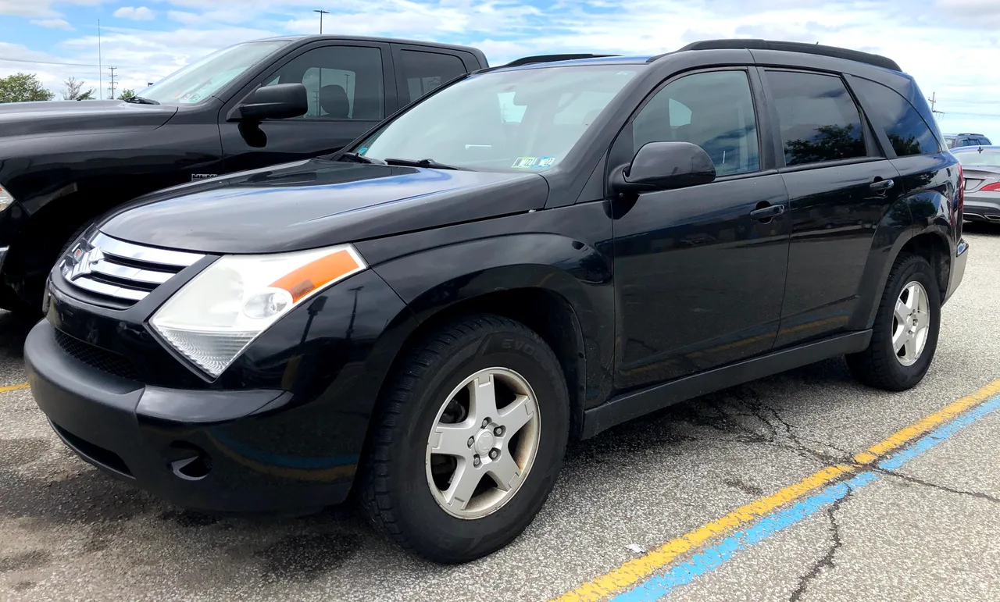
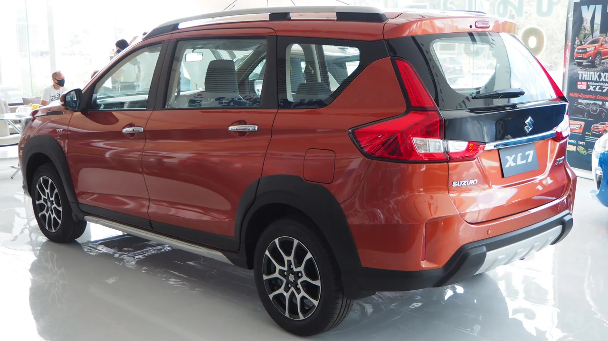

▲ 인도네시아·동남아 시장에서 판매되는 스즈키 XL7 — 에르티가를 기반으로 한 7인승 크로스오버다
자동차 이름이 부활할 때는 보통 이전 모델의 후광을 노리기 마련입니다. 그런데 스즈키 XL7은 조금 다른 케이스입니다. 미국에서 쓰이던 XL7이라는 이름이 2012년 스즈키의 미국 시장 철수와 함께 사라졌다가, 몇 년 뒤 동남아시아에서 완전히 다른 플랫폼의 차에 다시 붙었습니다. 그리고 이 차가 2026년 7월 인도네시아 국제 모터쇼(GIIAS)에서 페이스리프트를 거쳐 새로 공개됐습니다.
1. 미국에서 죽은 이름 — 옛 XL7의 역사

▲ 2007~2009년 미국에서 팔린 옛 XL7 — GM의 세타 플랫폼을 기반으로 한 완전히 다른 차였다 ⓒ Cutlass, Wikimedia Commons (Public Domain)
XL7이라는 이름은 원래 미국 시장용이었습니다. 2001년 등장한 1세대는 그랜드 비타라를 늘린 바디온프레임 구조로, 3만 달러 미만 가격대에 3열 시트를 제공한 최초의 SUV 중 하나로 주목받았습니다. 2007년 나온 2세대는 완전히 새로운 차였는데, GM의 세타 플랫폼을 기반으로 했습니다. 이 플랫폼은 쉐보레 이쿼녹스, 폰티악 토렌트, 새턴 뷰와 공유했는데, XL7은 그중 유일하게 7인승 3열 시트를 제공한 버전이었습니다. 하지만 판매 부진으로 2009년형을 끝으로 단종됐고, 2012년 스즈키가 미국 자동차 시장에서 완전히 철수하면서 XL7이라는 이름도 함께 사라졌습니다.
2. 부활한 이름, 그러나 완전히 다른 차
지금의 XL7은 2019년 동남아시아에서 새로 등장했는데, 옛 XL7과는 이름만 같을 뿐 아무 관계가 없습니다. 신형은 스즈키의 소형 미니밴 에르티가를 기반으로, '하트렉트' 아키텍처를 늘려 크로스오버 스타일로 다듬은 차입니다. 인도에서 먼저 나온 XL6과 사실상 같은 차이지만, 가운데 줄에 캡틴시트 대신 일반 좌석을 넣어 7인승을 유지한 버전이 XL7입니다. 에르티가와 플랫폼은 같지만 전장 4,450mm·전폭 1,775mm·전고 1,710mm로 에르티가보다 각각 55mm·40mm·20mm씩 커졌고, 부품 200여 개가 다른 것으로 알려져 있습니다. 인도네시아 치카랑 공장에서 생산돼 동남아 각국과 중남미로 수출됩니다.
▲ XL7의 뼈대가 된 미니밴 에르티가 — 둥근 전면부와 낮은 차체가 크로스오버 스타일의 XL7과 확연히 다르다 ⓒ InfoMotif, Wikimedia Commons (CC BY 3.0)
3. 2026 페이스리프트 — 무엇이 바뀌었나
이번 페이스리프트는 전면부를 중심으로 손을 봤습니다. 그릴이 커지면서 하단 스키드플레이트까지 이어지고, 수직형 사이드 인테이크와 LED 안개등이 새로 적용됐습니다. 16인치 신규 디자인 알로이 휠, 어두워진 테일램프, 투톤 컬러 옵션, 상어지느러미 안테나까지 더해져 외관 전체가 한층 다부진 인상으로 바뀌었습니다. 실내에는 애플 카플레이·안드로이드 오토를 지원하는 9인치 터치스크린이 들어갔고, 최상위 트림에는 360도 카메라와 타이어공기압경보장치(TPMS), 블랙박스(DVR)까지 기본 탑재됩니다.

▲ XL7 후면부 — 어두워진 테일램프와 스키드플레이트 스타일 범퍼가 크로스오버 이미지를 강조한다
4. 파워트레인 — 자연흡기 + 마일드하이브리드
엔진은 K15B 1.5L 자연흡기 4기통으로, 103~105마력과 138Nm의 토크를 냅니다. 변속기는 5단 수동과 4단 자동 중 선택할 수 있습니다. 상위 트림인 '뉴 알파 하이브리드'와 '뉴 베타 하이브리드'에는 스즈키의 SHVS(Smart Hybrid Vehicle by Suzuki) 마일드하이브리드 시스템이 적용되는데, 스타터제너레이터와 소형 리튬이온 배터리를 결합해 연비와 초기 가속을 개선합니다. 배터리에는 8년·16만km 보증이 제공되고, 30개월·5만km 무상 점검 서비스도 포함됩니다.
5. 가격 — 코롤라 크로스 크기에 2000만원대
| 트림 | 가격(현지 통화) | 원화 환산(약) |
|---|---|---|
| 뉴 제타(가솔린) | IDR 2억 7,430만 | 2,070만원 |
| 뉴 알파 하이브리드 | - | 2,070만~2,490만원 사이 |
| 뉴 베타 하이브리드(최상위) | IDR 3억 2,970만 | 2,490만원 |
해외 매체 카스쿱스는 이 차가 전장 175.6인치(4,450mm)로, 보통 190~205인치에 달하는 미국형 3열 SUV보다 훨씬 작다는 점을 지적하며 "토요타 코롤라 크로스 정도의 크기"라고 비교했습니다. 그 작은 몸집에 3열 좌석 7인승을 구겨넣은 셈인데, 가격은 2,000만원대 초중반에 불과합니다.
6. 어디서 살 수 있나
XL7은 인도네시아, 동남아시아 각국, 중남미, 아프리카 등지에서 판매되고 있으며, 한국과 미국에는 출시되지 않습니다. 스즈키는 2018년 한국 승용차 시장에서 철수한 상태라, 국내에서 이 차를 정식으로 만날 방법은 현재로선 없습니다. 다만 저렴한 가격에 3열 7인승을 갖춘 소형 크로스오버라는 컨셉 자체는, 국내에서도 이런 세그먼트에 대한 수요가 있는 만큼 눈여겨볼 만한 사례입니다.
7. 정리하며
같은 이름 아래 완전히 다른 두 대의 차가 존재한다는 사실은, 자동차 네이밍이 브랜드 전략에 따라 얼마나 유연하게 재활용되는지를 보여주는 흥미로운 사례입니다.